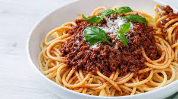

Bolognese συνταγη

Περιγραφη
Μακαρονια με κιμα με παραλλαγη της παραδοσιακης σαλτσας bolognese
Συστατικα
- 6 κ.σ. ελαιόλαδο
- 750 γρ. κιμά μοσχαρίσιο
- 2 κρεμμύδια, ψιλοκομμένα
- 1 σκ. σκόρδο, ψιλοκομμένη
- 1 κ.γ. ζάχαρη κρυσταλλική
- 1 κ.σ. θυμάρι, ξερό
- 2 κ.σ. πελτέ ντομάτας
- 100 ml κρασί κόκκινο
- 200 ml νερό
- 1 κύβο κότας
- 1 στικ κανέλα
- 2 φύλλα δάφνης
- 3 κόκκους μπαχάρι
- 400 γρ. ντομάτα κονκασέ
- 500 γρ. σπαγγέτι
- 100 ml κρέμα γάλακτος 35%
- παρμεζάνα, τριμμένη, για το σερβίρισμα
Μεθοδος εκτελεσης
- Βάζουμε ένα βαθύ αντικολλητικό τηγάνι σε δυνατή φωτιά να κάψει πολύ καλά και ρίχνουμε 1 κ.σ. ελαιόλαδο.
- Προσθέτουμε το ¼ από τον κιμά, κόβοντάς τον σε κομματάκια με το χέρι μας. Σοτάρουμε μέχρι να καραμελώσει και να πάρει χρώμα εξωτερικά (δεν θέλουμε να ψηθεί τελείως).
- Αφαιρούμε τον κιμά από το τηγάνι με μια τρυπητή κουτάλα, τον βάζουμε σε ένα μπολ και επαναλαμβάνουμε άλλες τρεις φορές την ίδια διαδικασία με τον υπόλοιπο κιμά (αν προσθέσουμε όλο τον κιμά κατευθείαν δεν θα καραμελώσει όμορφα).
- Στο ίδιο τηγάνι και χωρίς να το καθαρίσουμε προσθέτουμε το υπόλοιπο ελαιόλαδο, τα κρεμμύδια, το σκόρδο, τη ζάχαρη, το ξερό θυμάρι και αφήνουμε να καραμελώσει το κρεμμύδι για τουλάχιστον 4-5 λεπτά.
- Στη συνέχεια, ρίχνουμε τον κιμά, τον πελτέ και ανακατεύουμε.
- Σβήνουμε με το κρασί και αφήνουμε να εξατμιστεί τελείως το αλκοόλ.
- Με το που εξατμιστεί το κρασί, ρίχνουμε μέσα το νερό, τον κύβο, το στικ κανέλας, τα φύλλα δάφνης, τα μπαχάρια και τη ντομάτα κονκασέ.
- Χαμηλώνουμε τη φωτιά, ανακατεύουμε και αφήνουμε να σιγοβράσει για τουλάχιστον 10 λεπτά.
- Όση ώρα βράζει ο κιμάς, ετοιμάζουμε τα ζυμαρικά μας.
- Σε μία κατσαρόλα με μπόλικο αλατισμένο νερό που βράζει, ρίχνουμε τα μακαρόνια.
- Τα βράζουμε σύμφωνα με τις οδηγίες της συσκευασίας, μείον ένα λεπτό. Θέλουμε τα μακαρόνια μας να είναι al dente.
- Μόλις τα ζυμαρικά μας είναι έτοιμα, τα βγάζουμε από τη φωτιά, τα σουρώνουμε και αφήνουμε στην άκρη.
- Αφού έχει δέσει η σάλτσα μας, προσθέτουμε την κρέμα γάλακτος, ανακατεύουμε και σβήνουμε τη φωτιά.
- Σερβίρουμε τα μακαρόνια με τη σάλτσα κιμά από πάνω, πασπαλίζουμε με φρέσκια παρμεζάνα, βασιλικό και μπόλικο φρέσκο πιπέρι.